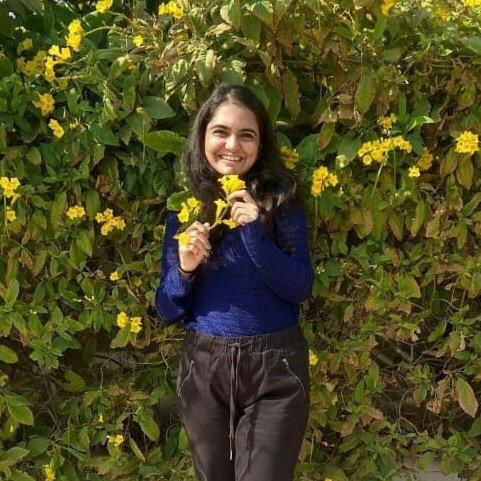

JOY?
By Binita Soni
July 10, 2020
"What's joy? ", my thoughts always ponder around this question. Then suddenly the idea strikes my mind! It's what I feel right now. I suddenly gets this tinkling feeling in my guts and a rush of dopamine hits my mind. A big smile brightens my day and makes it 100x better. I'll tell you a shocking fact, whatever you are worried about 85 percent of that thing never happens. It's like the time your umberalla is still open even after it has stopped raining.
Happiness for me is peace, I am at my best behavior when my mind is shooting oxytocin. The other times I'll be that snickers ke ad ka character a.k.a "hangry". Does this mean food gives me happiness?. Ahhhh wait...before you say that's just temporary happiness. Have you ever tried eating your sibling's favourite chocolate which is hidden in the fridge? In my case I just leave the wrappers there for my sister to see which drives her nuts. Before you say I am an evil younger sister (which I am). My sister still keeps her favourite chocolate at the exact same place. That's love and peace and joy and happiness combined. Happiness can even be found in the most silly thing possible. Peace can even be just having our own moment of silence, away from the chaos of the world staring straight at a splendid sunset! Me being a silly girl that I am, for me happiness is just a very beautiful sky. It can be of any colour blue, pink, amaranthine, yellow, orange, purple, magenta and I will still be equally in awe of it's beauty. Isn't it astounding of how different we all are, still you'll never be able to deny the peace and beauty sky brings with it. I'll let you in a secret that makes me a happy girl. Whenever the different colors I previously mentioned blend in the sky to make a beauty that it is , I feel it's telling me, "yes bini you can do it, theres no chaos around just be happy and be positive !"
So, aap chronology samjhe aur whenever you feel sad, silly or depressed just look up there's a marvellous beauty that will bring your mind at peace. And just tilt that frown to 180° to a gorgeous smile. That's the beauty of the sky reflecting at your face. As leo Tolstoy says, " if you want to be happy, be happy"! Be bewitching!!
About Binita
I am that cute girl next door, who has a knack for writing. My major is Information technology engineering which I love by tweaking the computer and getting engrossed in constant loops. I'll never disappoint you when it comes to friendships!